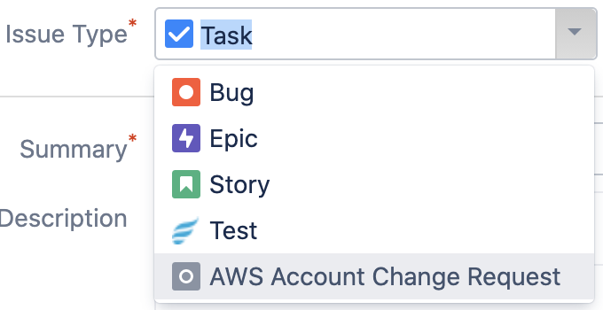
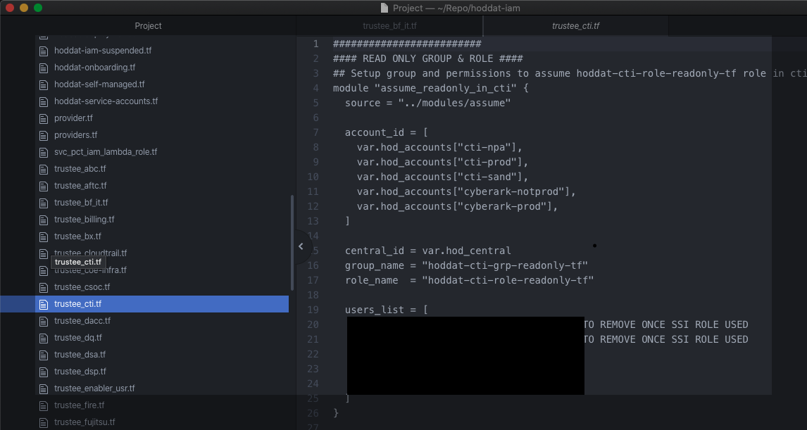

AWS IAM Account Requests
This page instructs Home Office staff on how to make changes to cloud accounts. The Public Cloud Team manage Identity and Access Management (IAM) in the Home Office. Any requests such as creating/deleting an account, adding new roles to your account and resetting a password need to be logged on the Jira board as explained in the how to make an IAM request step-by-step instructions below.
Who can raise tickets?
- Approvers can raise requests on behalf of their colleagues. An example of this would be to request for a user to be removed after they have left the Home Office.
- Cloud user can raise tickets to make changes to their existing account
- New users requesting a cloud account
Useful pages
- Approvers list - When users that are not approvers raise a ticket, they must attach an approver to their request.
- To see a full list of roles available for each AWS account then visit our Cloud Account or IAM User Changes & Requests & Approvers page to find your account details (This list is updated periodically).
How to make IAM requests
Below is an example of how to make a request to create a new user in the cloud. However, the same steps can be applied to all the ticket types.
- Visit the Jira board and click the ‘Create’ button in the top right corner
- Next select the Issue Type - AWS Account Change Request 
- Choose the appropriate ticket type depending on your request e.g. New User, Reset Password, Delete User etc.
- Please fill in as much useful details as possible as this will help us complete the ticket as quick as we can. See the example below for a new user request.
- If you have access to the repo you could include these details into the ticket. 


Back to start of navigation tree
Back to top